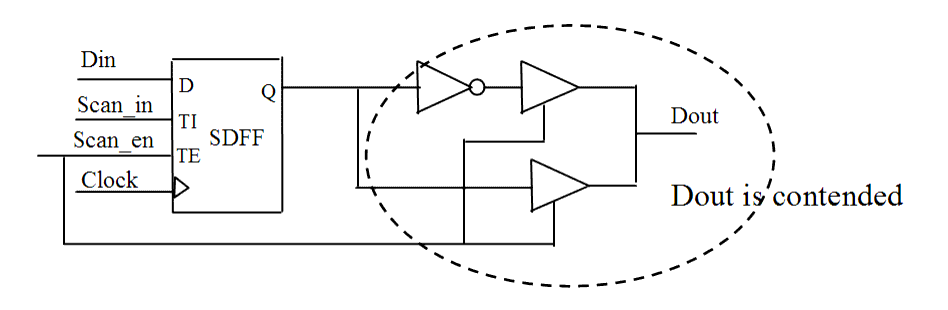

| Description | During a manufacturing test, all tristate buses must be driven by one driver and one driver only to match the simulated test pattern (multiple drivers propagate Xs). |
| Policy | DESIGN |
| Ruleset | DFT |
| Language | VHDL/Verilog |
| Type | Hardware |
| Severity | Error |
This is an example of invalid Verilog code, followed by a circuit diagram that illustrates the problem:
module ntl_dft8_top(Clock, Reset, Scan_en, Scan_in, Din, Dout ); input Clock, Reset, Scan_en, Scan_in, Din; output Dout; reg Dout_temp; // Scan DFF SDFF U1(.D(Din), .CP(Clock), .TI(Scan_in), .TE(Scan_en), .Q(Dout_temp)); //Tri-state BUF TBUF U3 ( .Z(Dout), .A(~Dout_temp), .E(Scan_en)); TBUF U4 ( .Z(Dout), .A(Dout_temp), .E(Scan_en)); // NTL_DFT08 fires -- Signal of Dout contended during Scan_en active endmodule